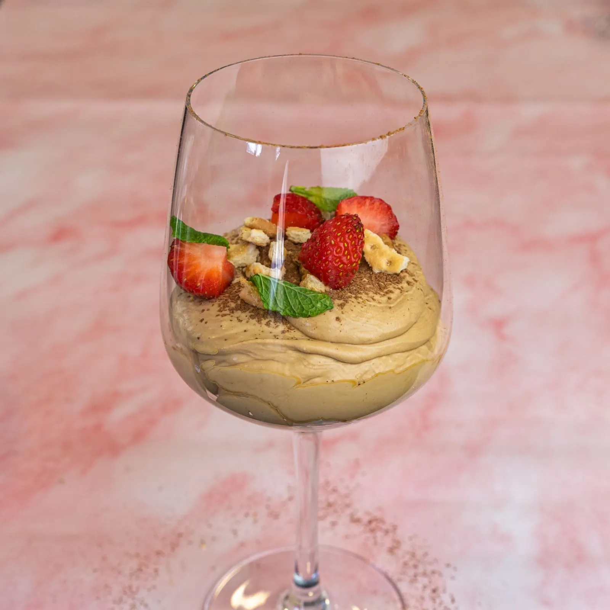

⏲ 20 minuts 👥 6 racions

Amb la broma ens acostem ja a finals de mes, i per això aquest cap de setmana us proposarem unes
postres. Es tracta d'una elaboració clàssica i francesa, d'aquelles que agraden als més gormands,
tant cremosa com gustosa. I que no presenta cap mena de complicació! Es tracta d'una mousse de rom i
cafè, que es fa com qualsevol elaboració similar, però que
utilitza el gust d'aquest alcohol, que és menys habitual com a protagonista. Rom i cafè es
retroalimenten i es realcen mútuament, donant un sabor extraordinari a aquest dolç.
Ingredients:
- 500g de nata muntada
- 300g de formatge crema
- 150g de sucre
- 50ml de rom
- 2 cullerades de cafè soluble
- En un bol, batem els 300 g de formatge crema i hi integrem primer els 150 g de sucre i després dels 50 ml de rom. Treballem fins a aconseguir una massa lleugera.
- En un altre bol, muntem els 500 g de nata 35% MG i hi afegim 2 cullerades de cafè soluble. Hi podem afegir una mica de canyella i una punta de sal.
- Hi integrem la primera preparació, sempre amb molta cura i amb moviments envoltants perquè no perdi l'aire. Reservem a la nevera ja dins de la màniga pastissera, durant un parell d'hores, fins que sigui l'hora d'emplatar.
- Emplatem en una copa o got, amb una base de galeta esmicolada, un raig de rom, la mousse, cacau en pols, més galeta, trossets de maduixa i fulles de menta.